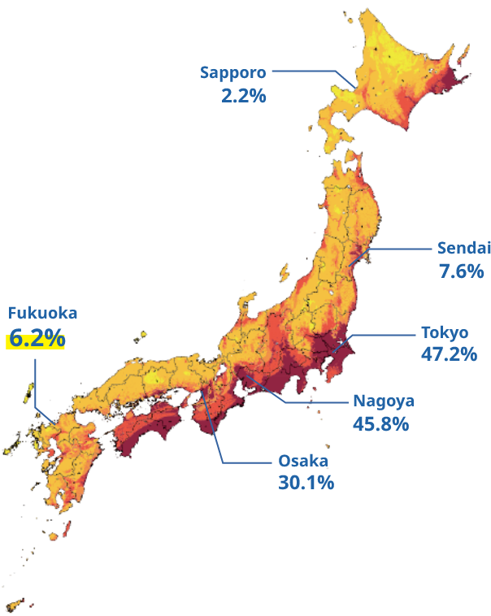

Select a prefecture from the dropdown or enter latitude and longitude manually.
Click Predict Risk to view earthquake risk level based on location.
The result includes the risk level, prediction confidence, and recommended safety tips.
都道府県を選択するか、緯度と経度を入力してください。
リスクを予測 ボタンをクリックして、その場所の地震リスクを確認できます。
結果には、リスクレベル、信頼度、そして安全対策の提案が表示されます。